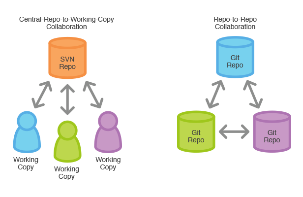
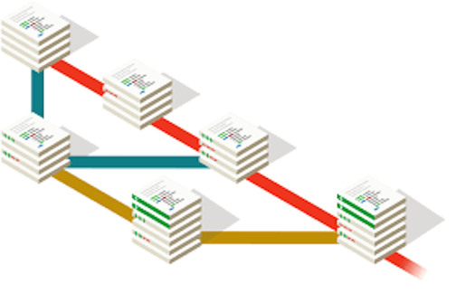
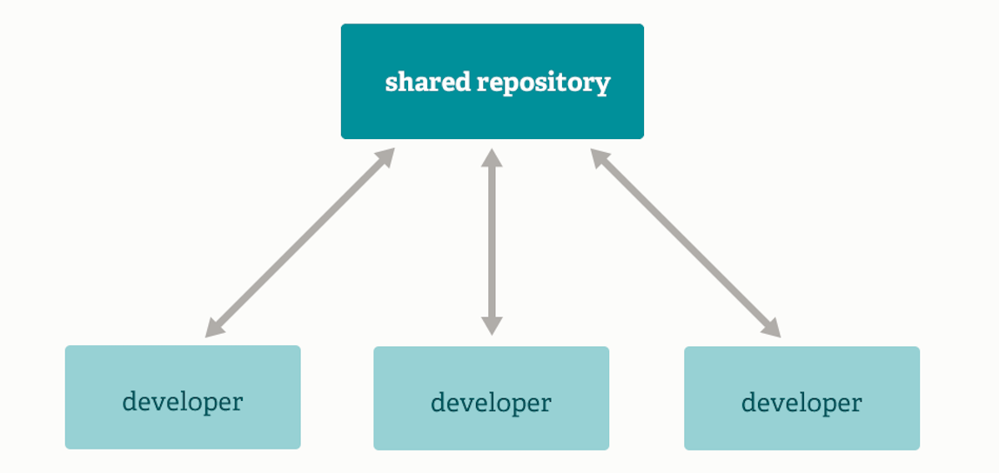
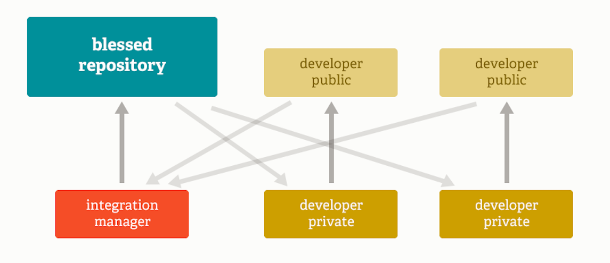
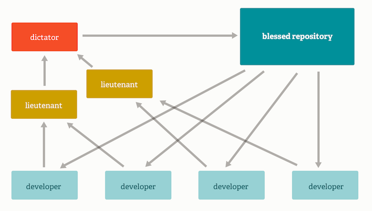
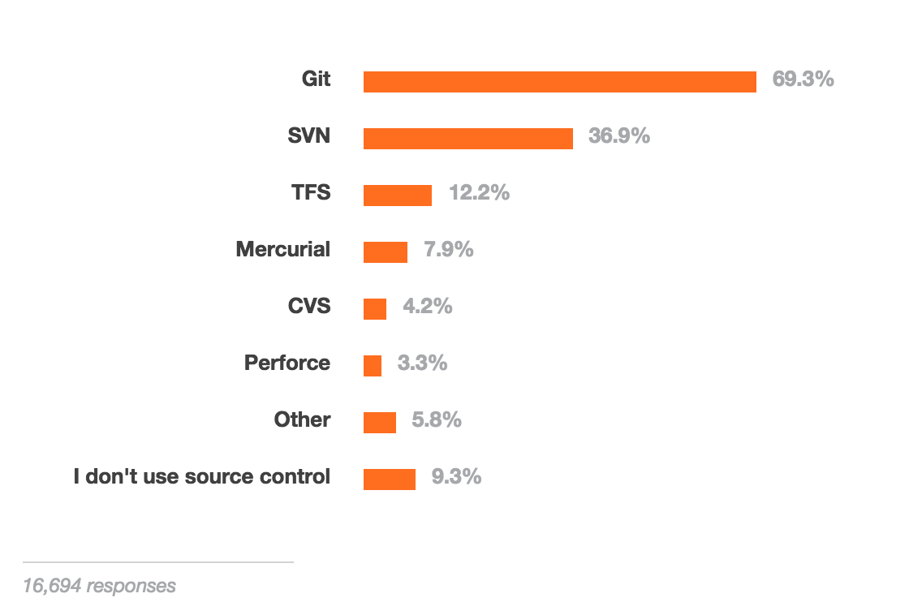
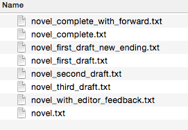
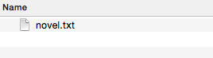
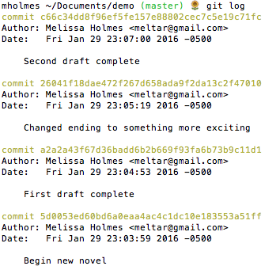
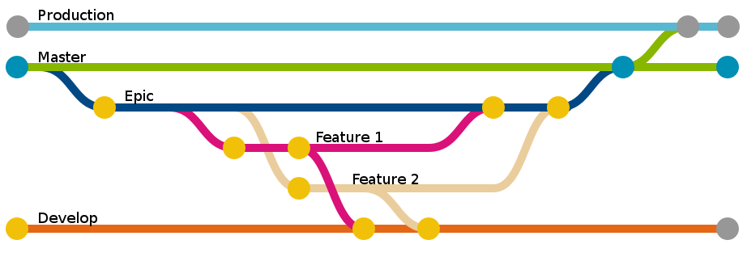

Intro to Git and Github
Welcome!
Girl Develop It is here to provide affordable and accessible programs to learn software through mentorship and hands-on instruction.
Some "rules"
- We are here for you!
- Every question is important
- Help each other
- Have fun
Welcome!
Tell us about yourself.
- Who are you?
- What do you hope to get out of the class?
- Who was your favorite character as a child?
What we will cover today
What is version control?
Version control allows you (and your team) to do two powerful things
Track and revert changes
Mistakes happen. Wouldn't it be nice if you could see the changes that have been made and go "back in time" to fix something that went wrong?
Collaborate
Create anything with other people, from academic papers to entire websites and applications.
Version Control Types
Centralized Version Control
Examples: CVS, SVN
One central server, each client (person) checks out and merges changes to main server
Distributed Version Control
Examples: Git, Mercurial
Each client (person) has a local repository, which they can then reconcile with the main server.
Version Control Types
Centralized vs Distributed
Example Workflows
Non linear
Example Workflows
Subversion-style (centralized)
Example Workflows
Integration Manager
Example Workflows
Dictator and Lieutenants
Version Control Distribution
Stack Overflow Developer Survey 2016
Intro to Git
Goals of Git Design
- Fast - Add to your team and code base quickly
- Non-linear - Support for multiple users and sets of changes
- Reliable - Safeguards protect code from corruption
- Distributed - Everyone has a local copy of the history
Without Version Control
With Version Control
 Installation and Setup
Git installation instructions on GitHub
Your first Local Repository
Go to home directory
In the bash terminal:
cd ~/
Create a "working directory"
mkdir my-first-repo
cd my-first-repo
Initialize repository with Git
git init
git status
Add files
Create a new hello_world.txt file in your new folder
Check repo status
git status
Tell Git to track our new file
git add hello_world.txt
git status
File is now tracked by Git
Changes and commits
Open hello_world.txt and add some more text
git status
Stage and commit the change
git add hello_world.txt
git commit -m "First commit. Added hello world to repository."
What did we just do??
How is this all different than just saving a file?
- When we add a new file, we tell Git to add the file to the repository to be tracked
- When we stage an existing file (also with the keyword 'add'), we are telling Git to track the current state of our file
- A commit saves changes made to a file, not the file as a whole. The commit will have a 'hash' so we can track which changes were committed when and by whom.
Look at our progress
git log
commit [HASH HERE]
Author: Your name
Date: [DATE HERE]
First commit. Added hello world to repository.
Nobody's Perfect
Undoing local changes
If you haven't committed yet
Open hello_world.txt and add some new text
git status
git checkout hello_world.txt
git status
Look at hello_world.txt. Your changes are gone.
Nobody's Perfect
Undoing staged changes
Open hello_world.txt and add some new text
git add hello_world.txt
git reset HEAD hello_world.txt
git checkout hello_world.txt
Look at hello_world.txt. Your changes are gone.
Nobody's Perfect
Undoing committed changes
Open hello_world.txt and add some new text
git add hello_world.txt
git commit -m "Changing and committing some lines"
git log --pretty=oneline
git revert [HASH]
Look at hello_world.txt. Your changes are gone.
Nobody's Perfect
Remove a file from staging
Create new file my_new_file.txt
git add my_new_file.txt
git reset my_new_file.txt
Nobody's Perfect
Delete a file
Create new file my_other_file.txt
git add my_other_file.txt
git commit -m "Add new file"
Manually delete your file
git rm my_other_file.txt
git commit -m "Remove file"
Branching
- Develop different code on the same base
- Conduct exploratory work without affecting the work on master branch
- Incorporate changes to your master branch only when you are ready
Git Branching
Branching
Create a new branch called new-feature
git checkout -b new-feature
Add new lines to hello_world.txt
git add hello_world.txt
git commit -m "Adding changes for new feature"
Branching
Switching branches
See all branches. Branch with * is active
git branch
Switch to master and look at hello_world.txt
git checkout master
Switch to new-feature and look at hello_world.txt
git checkout new-feature
Merging
Merge to get changes from one branch into another*
Switch to master and merge changes
git checkout master
git merge new-feature
Rebase is another option, but will not be covered in this workshop
Merging
Merge conflicts
Change first line in hello_world.txt in master branch
git add hello_world.txt
git commit -m "Changing first line on master"
Switch to new-feature branch
git checkout new-feature
Open hello_world.txt and change first line
git add hello_world.txt
git commit -m "Changing first line on new-feature"
Merging
Merge conflicts, cont.
Merge from master into new-feature
git merge master
You will be notified of a conflict. Go to the file and fix the problem. Then commit your edits.
GitHub
- Launched in 2008
- Leader in Social Coding
- GitHub is a commercial site that allows users to host Git repositories publicly and privately
- Open source projects host or mirror their repositories on GitHub
- Post your own code for others to use or contribute to
- Use and learn from the code in other people's repositories
GitHub
Git repository servers
GitHub
Create your first repository on GitHubGitHub
ReadME
While a README isn't a required part of a GitHub repository, it is a very good idea to have one. READMEs are a great place to describe your project or add some documentation such as how to install or use your project. You might want to include contact information - if your project becomes popular people will want to help you out.
GitHub
Get Local Repository of GitHub Repo
cd ..
mkdir hello-world
cd hello-world
git init
git remote add origin https://github.com/USERNAME/hello-world.git
git pull origin master
GitHub
Push to GitHub Repo
Edit the ReadMe file
git add README
git commit -m "Create readme file"
git push origin master
Go look at your github repo online
GitHub
Pulling from remote repository
If you're working with a team, make sure that you have everyone's changes before pushing your own changes.
- Commit local changes
- Pull changes other people have made
- Fix any conflicts and commit
- Push local changes to GitHub
git commit -m "My latest commit"
git pull origin master
git commit -m "Fixing merging conflicts"
git push origin master
Forking
- There are MILLIONS of public repositories on GitHub
- If you want to use or contribute to a repository, you can fork it.
GitHub
Fork a repository on GitHubPull Requests
- After you fork and clone a repository all pushed changes will go to your fork
- These changes will not affect the original repository
- If you would like to get your changes to be incorporated into the original repo, you can submit a pull request
GitHub
Open a Pull Request on GitHubManaging pull requests
How to manage pull requests is out of the scope of this short workshop, but you can learn more from the Github Collaborating Tutorials
Questions?
Resources
GDI Survey
Please complete the GDI survey for this workshop.